本地资料包 · APP 5506030 · 2026-10-28
挖哦 / WOoOW
明天可按字段复制、逐项上传。原始 LOGO 保留，实机截图与宣传画面分开。
这是内部预览，不是已发布的 Steam 商店页。后台尚未写入。开发者、价格、日期、配置及功能验收由团队确认。
先读我 上传对照表 待确认信息
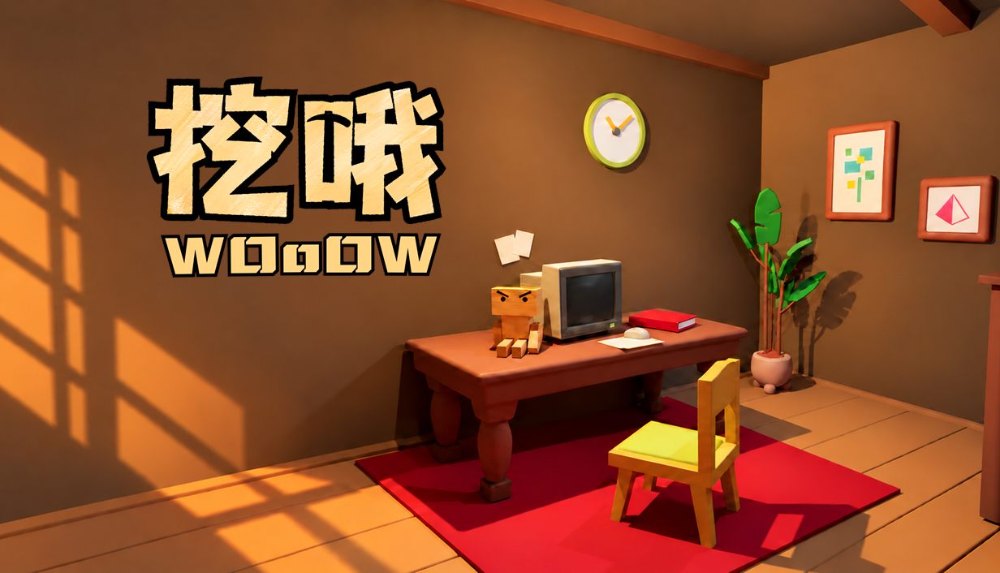
填写顺序
基本信息 → 三语描述 → 标签 → 商店与库图片 → 七张截图 → 视频与封面 → 补齐真实信息 → 保存草稿并预览
图片上传位置
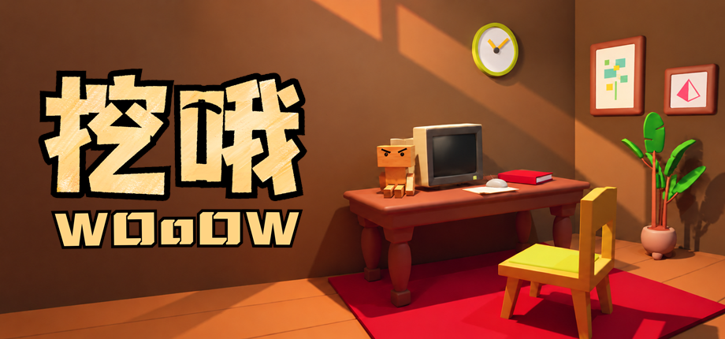
Header Capsule
920×430
打开文件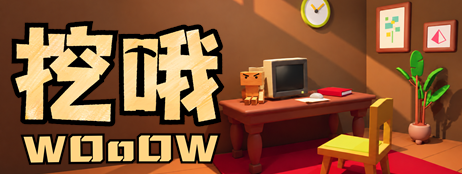
Small Capsule
462×174
打开文件Main Capsule
1232×706
打开文件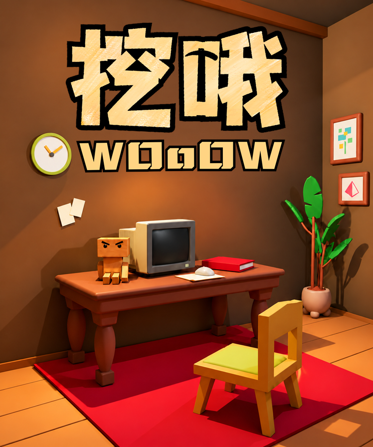
Vertical Capsule
748×896
打开文件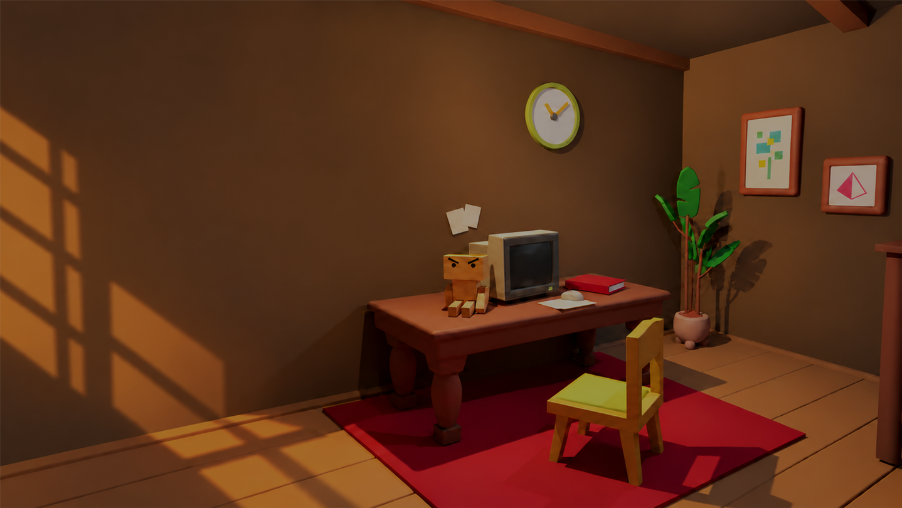
Page Background（可选）
1438×810
打开文件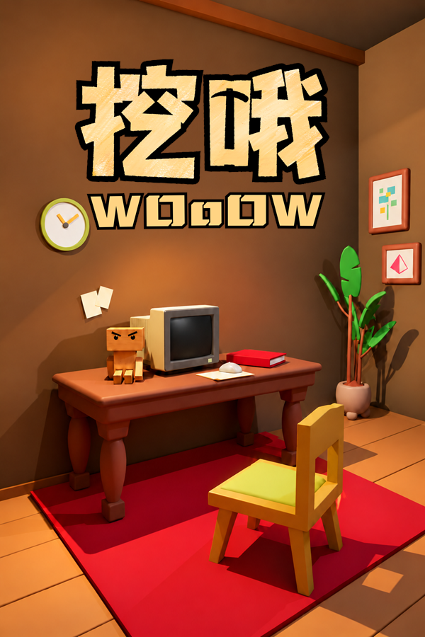
Library Capsule
600×900
打开文件
Library Header
920×430
打开文件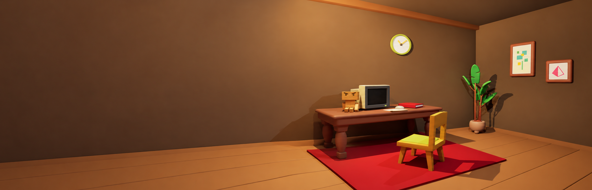
Library Hero
3840×1240
打开文件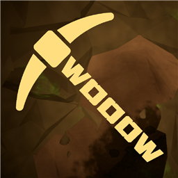
Shortcut Icon
256×256 PNG；另附 512 版
打开文件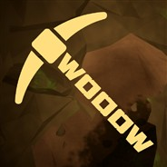
App Icon
184×184 JPG
打开文件透明库 LOGO
library_logo_1040x720.png，原始透明 PNG 等比缩放；上传后在 Steam 预览中调整位置。库壁纸中的方块角色位于中心安全区域附近，另附安全框预览供检查。
三语文案
简体中文
短简介 84 字符
关于这款游戏
English
短简介 226 字符
关于这款游戏
繁體中文
短简介 84 字符
关于这款游戏
标签建议
1. Exploration · 探索2. Mining · 采矿3. First-Person · 第一人称4. Surreal · 超现实5. Puzzle · 解谜6. Adventure · 冒险7. Collectathon · 收集马拉松8. 3D · 3D9. Stylized · 风格化10. Atmospheric · 氛围11. Funny · 欢乐12. Destruction · 破坏13. Singleplayer · 单人14. Indie · 独立15. Casual · 休闲
前五项优先。卡牌房不等于牌组构筑或肉鸽；不要为凑数量添加弱相关标签。
实机截图顺序
这七张是原始 2560×1440 图片的复制件，没有生成或重画玩法。
视频
1. 实机玩法预告
2. 流程实机演示
可选的真实玩法 GIF
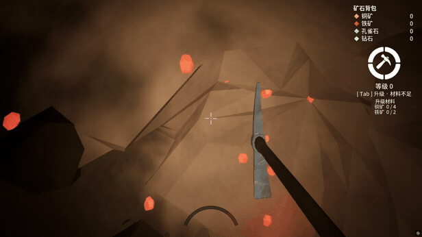
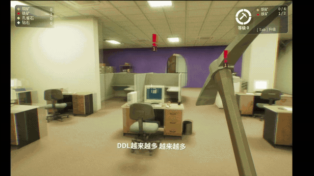
把它们上传到 Steam 描述编辑器后插入相应段落；不要粘贴本地路径。
仍需团队确认
开发/发行商名称、支持邮箱、发行日期、价格、实测系统需求、最终构建语言与 Steam 功能、内容调查。详见文本文件；本包不将推测写成已完成的功能。
官方要求
只有准确的字段和原始玩法，才能让页面与实际游戏一致。制作与核验记录位于 10_填写说明与核验。